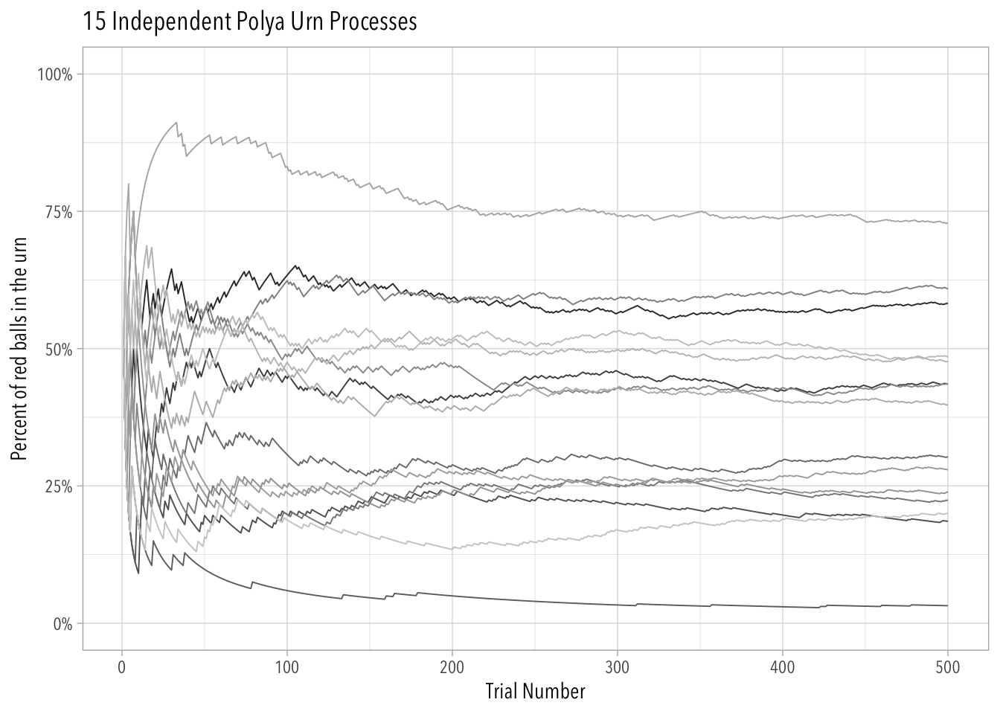
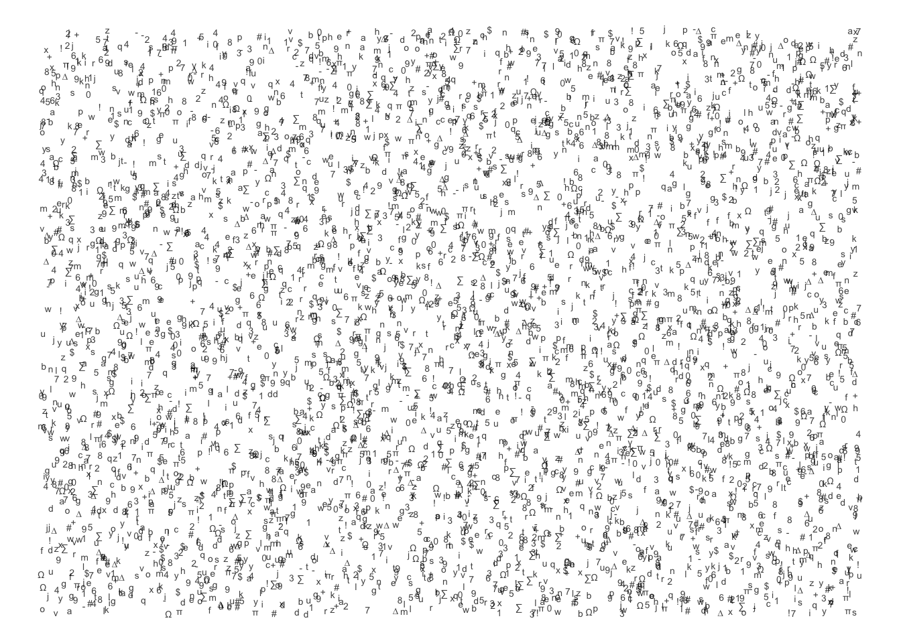
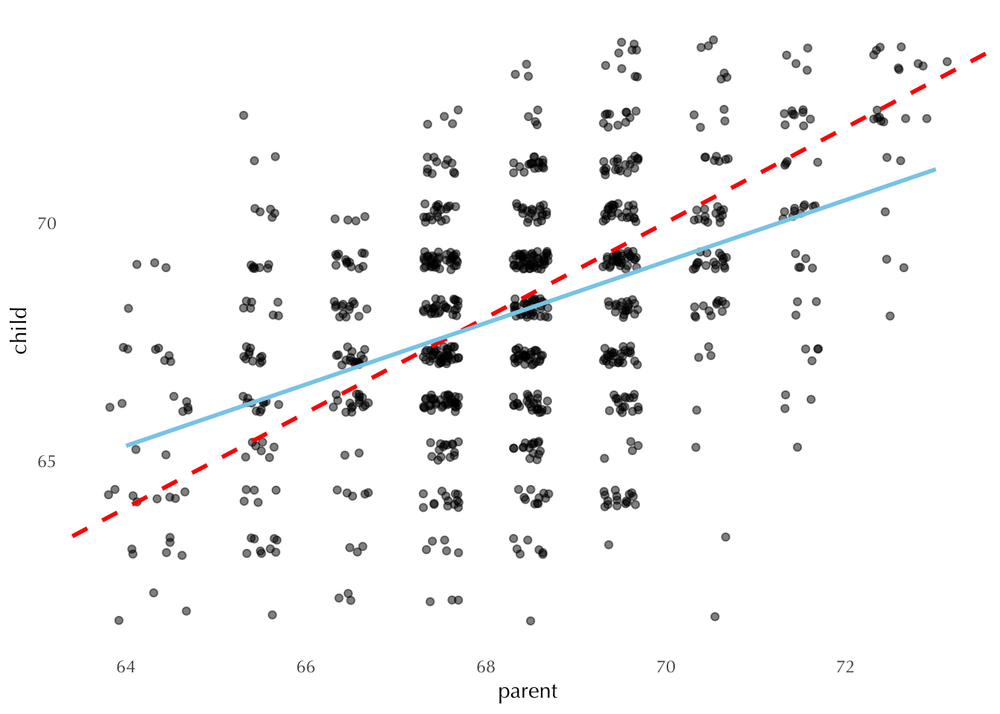

about
cv
github
blog
Categories
All
(11)
Causality
(1)
Computation
(1)
Networks
(1)
Philosophy
(1)
Probability
(1)
R
(2)
Social Science
(1)
Sociology
(5)
Statistics
(2)
Theory
(4)

Path Dependence
Polya Urns
Mar 10, 2024
andrés castro araújo
Levels
Theory
Sociology
Some of them are good.
Jan 25, 2024
andrés castro araújo
“Better Theories”
Theory
Sociology
Formal, pragmatic, aesthetic, and empirical virtues
Jan 11, 2024
andrés castro araújo
Fetishism and The “Variables Paradigm”
Sociology
Theory
Please don’t.
Jan 4, 2024
andrés castro araújo
What is Sociology in the USA?
Sociology
Networks
A visualization.
Jan 2, 2024
andrés castro araújo

Data
Philosophy
Statistics
What is data, if not experience persevering?
Dec 31, 2023
andrés castro araújo
What is Computational Social Science?
Social Science
Computation
It is a trading zone, driven by improvements in digital technology and associated with a new professional group.
Dec 27, 2023
andrés castro araújo
Distributions in R
R
Probability
A short tutorial.
May 12, 2022
andrés castro araújo
Theory-Work
Theory
Sociology
Deepities, social constructionism, and sociological theory.
Feb 7, 2022
andrés castro araújo

Regression to the Mean
Statistics
Causality
A visual explanation.
Jan 1, 2022
andrés castro araújo
Optimization in R
R
A few different ways to do optimization.
Jan 24, 2021
andrés castro araújo
No matching items